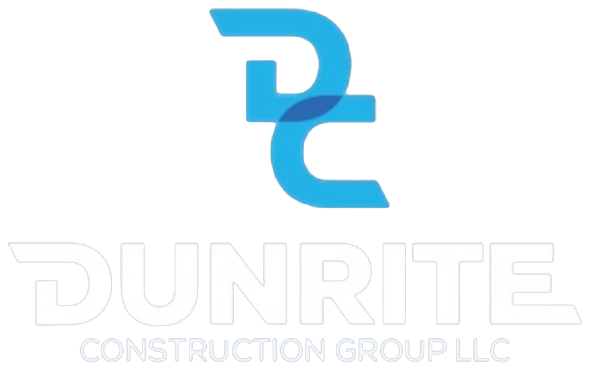

|
Employee Handbook
Policies,
|
| Classification | Definition |
|---|---|
| Full-Time | Regularly scheduled to work 30 or more hours per week. Eligible to participate in Company benefit programs subject to each plan's terms. |
| Part-Time | Regularly scheduled to work fewer than 30 hours per week. Generally not eligible for most benefits except as required by law or plan terms. |
| Temporary | Hired for a specific project or a limited period. Not eligible for benefits unless required by law. |
| Seasonal | Hired for a defined peak period. Not eligible for benefits unless required by law. |
| Exempt | Paid on a salary basis and exempt from federal/state overtime requirements based on duties and salary level. |
| Non-Exempt | Entitled to overtime pay at 1.5× the regular rate for hours worked over 40 in a workweek. Most field and hourly positions are non-exempt. |
Exempt vs. non-exempt status is determined by the duties you perform and the salary thresholds set under the federal Fair Labor Standards Act (FLSA), not by job title alone. Questions about your classification should be directed to the office manager.7
Hiring Requirements8
All offers of employment with DunRite are contingent on satisfying the Company's pre-employment requirements. Failure to meet or maintain any applicable requirement may result in withdrawal of an offer or termination of employment.
Background Checks
Where permitted by law and appropriate to the position, the Company conducts background checks, which may include criminal history, employment verification, and reference checks. Checks subject to the Fair Credit Reporting Act (FCRA) are conducted only after written authorization, and adverse decisions follow the required notice process.
Drug Screening
Employment is contingent on passing a pre-employment drug screen. The Company maintains a Drug-Free Workplace (see Section 10), and additional testing may be required during employment as described in that policy. Drug and alcohol screening is required of any employee who drives a Company vehicle or operates Company equipment or machinery larger than hand tools. These requirements apply to all employees and associates of the Company, with no exceptions or grandfathering.
I-9 Employment Eligibility & E-Verify
Federal law requires every employee to complete Form I-9 and present documents establishing identity and authorization to work in the United States within three business days of hire. DunRite participates in E-Verify to confirm work authorization. Employment may not continue without satisfactory verification.
Driver Qualification & Valid License
Employees who drive Company vehicles or drive personal vehicles for Company business must hold a valid driver's license and maintain an acceptable driving record. The Company may review motor vehicle records before assignment and periodically thereafter. Positions requiring the operation of certain commercial vehicles may require a valid Commercial Driver's License (CDL) and compliance with applicable U.S. Department of Transportation (DOT) requirements (see Section 13). You must immediately notify your supervisor if your license is suspended, revoked, restricted, or expired.
Compensation Policies
Pay Periods & Paydays9
Employees are paid on a weekly basis. The Company sets the standard workweek and pay schedule and communicates it to each employee. If a payday falls on a holiday, employees are generally paid on the preceding business day.
Direct Deposit10
The Company encourages all employees to enroll in direct deposit. Pay is deposited to your designated account on payday. It is your responsibility to keep your banking information current with the office.
Timekeeping
Non-exempt employees must accurately record all time worked using the Company's timekeeping system. You must record your actual start time, end time, and meal periods. Falsifying time records — your own or another employee's — is a serious violation that may result in termination. Review your hours for accuracy and report any error promptly.
Overtime
Non-exempt employees are paid overtime at 1.5× the regular rate for all hours worked over 40 in a workweek, in accordance with the FLSA. All overtime must be authorized in advance by your supervisor. Working unauthorized overtime may result in discipline, but the Company will pay you for all hours actually worked.
Florida does not have a separate state overtime law; overtime is governed by the federal FLSA. Florida's minimum wage is adjusted annually — the Company pays at or above the current Florida minimum wage in effect.
Payroll Deductions
The Company makes legally required deductions (such as federal income tax, Social Security, and Medicare) and any voluntary deductions you authorize in writing (such as benefit premiums or retirement contributions). Your pay statement itemizes all deductions. Contact the office with any questions.
Prevailing Wage Projects
On public works or other projects subject to prevailing wage requirements (for example, under the Davis-Bacon Act), employees performing covered work are paid the applicable prevailing wage and fringe rate for the classification and locality of the work. Certified payroll records are maintained as required. Notify the office if you believe your prevailing wage rate has been applied incorrectly.
Attendance & Scheduling11
Work Hours
Standard work hours vary by jobsite and project schedule and are set by your supervisor. Construction work may begin early to avoid the heat of the day and may include extended hours during critical phases. You are expected to be at your assigned work area, ready to work, at your scheduled start time.
Reporting Absences
If you will be absent or late, notify your supervisor as early as possible, and before your scheduled start time. Leaving a message is not sufficient unless you speak with or receive confirmation from your supervisor. You must call in for each day of an absence unless told otherwise.
No-Call / No-Show
Failing to report to work and failing to notify your supervisor is a "no-call/no-show." Two consecutive scheduled workdays of no-call/no-show will be treated as a voluntary resignation (job abandonment), as described in Section 16.
Inclement Weather
Florida weather can interrupt outdoor work. When conditions make a jobsite unsafe — lightning, high winds, flooding, or extreme heat — work may be delayed, relocated, or suspended. Do not assume work is canceled; check with your supervisor or the designated call line before reporting. Non-exempt employees are generally paid only for hours actually worked, except where reporting-time or other rules apply.
During a hurricane watch or warning, the Company will communicate jobsite securing procedures and closure decisions through the Company's designated communication channels. Employees assigned to secure equipment and sites must follow the Company's storm-preparation checklist. After a storm, do not return to a jobsite until it has been declared safe. Your personal and family safety comes first — never travel through unsafe conditions to reach a site.
Benefits
DunRite offers a range of benefits to eligible employees. The summaries below are general; the official plan documents and insurance contracts govern in all cases. Eligibility, costs, and waiting periods are described in your enrollment materials.13
| Benefit | Summary |
|---|---|
| Health Insurance14 | Group medical coverage available to eligible full-time employees after the applicable waiting period. |
| Dental & Vision | Optional dental and vision coverage for eligible employees and dependents. |
| 401(k) Retirement15 | Eligible employees may contribute pre-tax through payroll. Eligibility and any Company contribution are described in the plan documents. |
| Paid Time Off (PTO)16 | Eligible employees accrue PTO based on length of service. Accrual rates and carryover are described in the Company's PTO policy. |
| Holidays17 | The Company observes a set of paid holidays each year for eligible employees. |
| Bereavement18 | Paid time off following the death of an immediate family member, as described in the Company's bereavement policy. |
| Jury Duty | Time off to serve on a jury (see Section 8). |
| Military Leave | Leave for military service in accordance with USERRA (see Section 8). |
Benefit eligibility generally requires full-time status and may include a waiting period. Enrollment windows, qualifying life events, and continuation rights (such as COBRA, where applicable) are described in your plan materials. Direct questions to the office manager.
Leave Policies
The Company provides the following leaves of absence in accordance with applicable law. Request leave as far in advance as practical, and keep your supervisor and the office informed of your status and expected return date.
Family & Medical Leave (FMLA)19
If the Company is a covered employer (50 or more employees within 75 miles), eligible employees may take up to 12 weeks of unpaid, job-protected leave in a 12-month period for qualifying reasons, including the birth or adoption of a child, a serious health condition, or to care for a family member with a serious health condition, and up to 26 weeks for qualifying military caregiver leave. Eligibility requires 12 months of service and 1,250 hours worked in the prior 12 months. Where FMLA applies, the Company administers leave in accordance with the law.
Military Leave (USERRA)
Employees who serve in the uniformed services are granted leave and reemployment rights in accordance with the Uniformed Services Employment and Reemployment Rights Act (USERRA). Provide advance notice of service when possible.
Jury Duty
The Company grants time off to serve on a jury. Notify your supervisor promptly when you receive a summons and provide documentation. Florida law prohibits dismissing or threatening an employee because of jury service.
Voting Leave
The Company encourages employees to vote. Where schedules conflict with polling hours, speak with your supervisor in advance to arrange time to vote.
Workers' Compensation Leave20
An employee who is unable to work due to a work-related injury or illness may be placed on workers' compensation leave and is subject to the procedures in Section 12. Return to work may require a medical release, and the Company may offer transitional or light-duty assignments where available.
ADA Accommodation
The Company provides reasonable accommodations to qualified individuals with disabilities to enable them to perform the essential functions of their job, unless doing so would cause undue hardship. If you need an accommodation, contact your supervisor or the office manager to begin an interactive discussion. The Company keeps medical information confidential.
Workplace Conduct
Professional Conduct
Every employee is expected to act professionally, treat others with respect, and represent DunRite well on jobsites, in the office, and in front of clients and the public. Insubordination, dishonesty, theft, fighting, threats, and willful damage to property are grounds for immediate termination.
Anti-Harassment & Anti-Discrimination
DunRite prohibits harassment and discrimination based on any characteristic protected by law (see Section 1). This includes sexual harassment — unwelcome advances, requests for sexual favors, and other verbal or physical conduct of a sexual nature — as well as harassment based on race, national origin, religion, age, disability, or any other protected status. This policy applies to conduct by and toward employees, supervisors, clients, vendors, and subcontractors.
Reporting: If you experience or witness harassment or discrimination, report it immediately to your supervisor, the office manager, or the President. If your supervisor is the source of the concern, report it to any of the other contacts. The Company will investigate promptly and discreetly.
No retaliation: The Company strictly prohibits retaliation against anyone who reports a concern in good faith or participates in an investigation. Retaliation is itself a violation of this policy and grounds for discipline up to termination.
Workplace Violence Prevention
Threats, intimidation, and acts of violence are strictly prohibited. Weapons are not permitted on Company property or jobsites except as expressly allowed by law. Report any threat or act of violence immediately, and call 911 in an emergency.
Social Media21
You are personally responsible for what you post. Do not post confidential Company or client information, jobsite photos that reveal client or security details, or content that harasses coworkers or disparages clients. Make clear that your personal views are your own. Nothing in this policy restricts legally protected activity, including discussing wages or working conditions.
Confidentiality
In the course of your work you may learn confidential information about the Company, clients, bids, pricing, and employees. You must keep this information confidential during and after employment and use it only for legitimate business purposes.
Company Property
Tools, equipment, vehicles, materials, devices, and documents are Company property to be used for business purposes and cared for responsibly. The Company may inspect its property, including vehicles, lockers, and devices, consistent with law. All Company property must be returned upon separation. At no time during an employee's tenure with the Company may Company property — whether in print or stored digitally or electronically — be removed from Company control or stored at any location, including personal devices or cloud storage, that has not been authorized by Company management and granted in writing.
Drug & Alcohol Policy22
Construction is safety-sensitive work. DunRite is committed to a drug- and alcohol-free workplace to protect the safety of all employees, subcontractors, and the public. The unlawful use, possession, sale, or being under the influence of drugs or alcohol while on duty, on Company property, or on a jobsite is strictly prohibited and may result in immediate termination.
Types of Testing23
- Pre-Employment:24 Required of applicants as a condition of employment.
- Post-Accident: Required following a workplace accident or injury, consistent with policy and law.
- Reasonable Suspicion: Required when a trained supervisor documents specific, observable signs of impairment.
- Random: Conducted on a neutral-selection basis where the Company implements random testing.
Drug and alcohol testing applies to any and all employees who operate Company equipment or machinery or who drive a Company-owned vehicle. Employees whose roles do not involve operating Company equipment or driving Company-owned vehicles may not be subject to every category of testing, except as otherwise required by law or this policy.
Prescription Drugs
If you are taking a prescription or over-the-counter medication that may affect your ability to work safely, you must report it to your supervisor before performing safety-sensitive duties. You are not required to disclose your underlying medical condition.
To the extent DunRite participates in Florida's Drug-Free Workplace Program (Fla. Stat. § 440.102), the Company follows the program's notice, testing, and confidentiality requirements, which can affect workers' compensation premium credits and the handling of injury-related claims. The Company's separate Drug-Free Workplace Program document governs the testing procedures, substances tested, confirmation testing, and employee rights in detail.
Safety & PPE Requirements25
Safety is our first core value. This section summarizes baseline expectations. The Company's separate Safety Manual, which follows federal OSHA construction standards (29 CFR 1926), governs detailed safety procedures and takes precedence on the specific subjects it covers.
Mandatory PPE
Required personal protective equipment must be worn at all times in designated areas. At a minimum this includes a hard hat, safety glasses, high-visibility apparel, and appropriate footwear. Task-specific PPE — gloves, hearing protection, respirators, fall-protection harnesses — must be worn as required by the job and the Safety Manual. PPE must be inspected before use and kept in good condition.
Jobsite Rules
- Follow all posted signs, barricades, and supervisor instructions.
- Keep work areas clean and free of trip and fall hazards (good housekeeping).
- Operate only equipment you are trained and authorized to use.
- Stay hydrated and follow heat-illness prevention practices in Florida conditions.
- Never bypass guards, tie-offs, or safety devices.
Stop Work Authority
Every employee has the authority — and the responsibility — to stop work when they observe an unsafe condition or act that could cause injury. Stopping work to address a hazard is always supported and will never be a basis for discipline.
Reporting Unsafe Conditions & Injuries
Report unsafe conditions, near misses, and all injuries — no matter how minor — to your supervisor immediately. Early reporting protects you and helps us prevent the next incident. Injury reporting procedures are detailed in Section 12.
Workers' Compensation25
DunRite carries workers' compensation insurance as required for Florida construction employers. If you are injured on the job, workers' compensation provides medical care and partial wage replacement for covered work-related injuries and illnesses, regardless of fault.
If You Are Injured
- Get safe and get help. In an emergency, call 911. Seek first aid or medical attention as needed.
- Report it immediately. Notify your supervisor as soon as possible — Florida law sets time limits for reporting work injuries, and prompt reporting protects your claim.
- Use authorized care. Except in an emergency, treatment must be provided by a medical provider authorized by the Company's workers' compensation carrier.
- Cooperate with the claim. Provide accurate information and complete required forms with the office.
- Follow restrictions & return to work. Provide medical releases and follow any work restrictions. The Company may offer light-duty or transitional work where available.
Florida construction employers are generally required to carry workers' compensation coverage. Post-accident drug testing may apply (see Section 10), and benefits may be affected by failure to report timely or by intoxication, as provided under Florida law. Fraudulent claims are prohibited and may result in termination and legal consequences.
Company Vehicles
Employees authorized to operate Company vehicles — or to drive personal vehicles for Company business — must do so safely, legally, and responsibly. The Company's separate Fleet Safety Program provides additional detail.
Fleet Safety & Authorization
Only employees who are authorized and hold a valid license (and CDL where required) may operate Company vehicles. This section applies to all Company-owned vehicles, trailers, and equipment. They are to be used for business purposes and kept clean, maintained, and secured. Report mechanical problems promptly.
Assigned Driver
A Company vehicle may be designated to an assigned driver, who is responsible for its day-to-day operation, condition, security, and routine upkeep. Only the assigned driver and other authorized employees may operate that vehicle. Assigned drivers must complete a vehicle condition check at assignment and report any damage, mechanical issue, or accident promptly.
Personal Use of Vehicles, Equipment & Tools
Company-owned vehicles, trailers, equipment, and hand tools are provided for Company business. Personal use — including taking Company tools or equipment home, or towing or hauling with a personal vehicle for non-Company purposes — is not permitted unless authorized by Company management in writing. Employees are responsible for the care and return of any Company property issued to them.
Seatbelt Policy
All occupants must wear seatbelts at all times the vehicle is in motion. No exceptions.
Cell Phone & Distracted Driving
Texting while driving is prohibited. Handheld phone use while driving is prohibited; if a call is necessary, use a hands-free device or pull over safely. Florida law restricts texting and handheld use in work and school zones. When in doubt, pull over.
DOT Requirements
Employees operating vehicles subject to U.S. DOT regulations must comply with applicable requirements, which may include medical certification, hours-of-service rules, inspections, and participation in a DOT drug-and-alcohol testing program.
Accident Reporting26
Report any accident involving a Company vehicle — or a personal vehicle used for Company business — immediately, regardless of severity. Call 911 if anyone is injured, exchange information as required, do not admit fault, photograph the scene if safe, and notify your supervisor. Complete the Company's accident report.
Technology & Equipment Use
Company-provided technology and equipment are tools for doing your job. Use them responsibly and primarily for business purposes. The Company may monitor, access, and review its systems and devices consistent with law; you should have no expectation of privacy in Company systems.
Phones & Tablets
Company phones and tablets are for business use, including jobsite documentation, scheduling, and project management apps. Protect devices from loss, theft, and damage, and secure them with required passcodes.
GPS Tracking
Company vehicles and certain equipment may be equipped with GPS for safety, routing, dispatch, and asset protection. By operating Company vehicles and equipment, you acknowledge they may be tracked.
Email & Internet
Company email and internet access are provided for business use. Do not use Company systems to send harassing, discriminatory, or offensive material, to access inappropriate content, or to disclose confidential information. Communicate professionally — assume anything you write may be read by others.
Company Computers & Software
Install only authorized software, keep credentials confidential, and follow Company security practices. Do not connect unauthorized devices to Company systems. Report lost devices or suspected security incidents immediately.
Discipline Policy27
The Company expects all employees to meet its standards of conduct, performance, attendance, and safety. When standards are not met, the Company may use a progressive discipline approach to give employees an opportunity to correct the issue.
Progressive Discipline
- CoachingAn informal conversation to clarify expectations and correct minor issues early.
- Verbal WarningA documented verbal discussion identifying the problem and required improvement.
- Written WarningA formal written notice describing the issue, expectations, and consequences of continued problems.
- Final WarningA last opportunity to correct, which may include suspension.
- TerminationEnding employment when prior steps have not resolved the issue.
Progressive discipline is a guideline, not a contract or a promise. Because employment is at-will, the Company reserves the right to begin discipline at any step — including immediate termination — based on the seriousness of the conduct and the circumstances. Some violations (such as theft, violence, serious safety violations, intoxication on duty, or falsifying records) may result in immediate termination without prior warnings.
Separation of Employment28
Resignation
Employees who choose to resign are asked to provide at least two weeks' written notice as a professional courtesy. Notice helps ensure a smooth transition, though employment remains at-will.
Job Abandonment
An employee who is absent without notice for two consecutive scheduled workdays (no-call/no-show, see Section 6) is considered to have voluntarily resigned by abandoning their position.
Termination
The Company may end employment at any time, consistent with the at-will relationship and applicable law. Termination decisions are made by management.
Final Pay
Final wages for all hours worked are paid in accordance with Florida law and the Company's regular pay practices, generally on the next scheduled payday. Authorized deductions and the value of unreturned property may be addressed as permitted by law. Any accrued, unused PTO is handled in accordance with Company policy and applicable law.
Return of Company Property
On or before your last day, you must return all Company property, including tools, equipment, keys, access cards, phones, tablets, computers, uniforms, documents, and any confidential materials. Failure to return property may result in legal action and deductions to the extent permitted by law.
Employee Acknowledgement29
This page must be signed and returned to the office. Please read it carefully before signing.
I acknowledge that I have received a copy of the DunRite Construction Group LLC Employee Handbook. I understand that it is my responsibility to read, understand, and comply with the policies it contains, and to ask questions about anything I do not understand.
I understand that this handbook is a summary of current policies and is not a contract of employment and does not guarantee employment for any specific period. I understand that my employment with the Company is at-will, meaning that either I or the Company may end the employment relationship at any time, with or without cause or notice.
I understand that the Company may change, add, or eliminate policies in this handbook at any time, with or without notice, to the extent permitted by law, and that only the President has the authority to alter the at-will relationship, and only in a signed writing.
I acknowledge that I have been given the opportunity to ask questions about the handbook and that I am responsible for complying with its policies, including the safety and drug-free workplace requirements.

DunRite Construction Group LLC · Employee Handbook · 2026 Edition · Confidential31